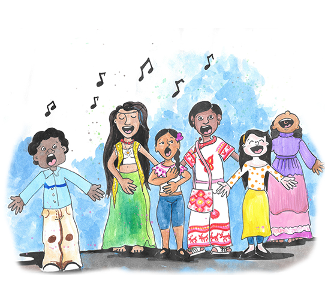

Nuestros tres fundamentos
¿Cuáles son los tres fundamentos del Proceso Nacional de Reconciliación con la Naturaleza?

Justicia transicional
- Derecho al conocimiento de la verdad
- Derecho a la Justicia
- Derecho a la reparación del daño
- Derecho a la garantía de no repetición
Rehabilitación del lago de Texcoco

Cultura de la paz
- Es urgente garantizar la paz y estabilidad entre los seres humanos y la naturaleza

Bienestar del pueblo
Toda la población debe gozar de los elementos mínimos que le garanticen:
- Bienestar material
- Bienestar ambiental
- Bienestar intelectual
- Bienestar del alma